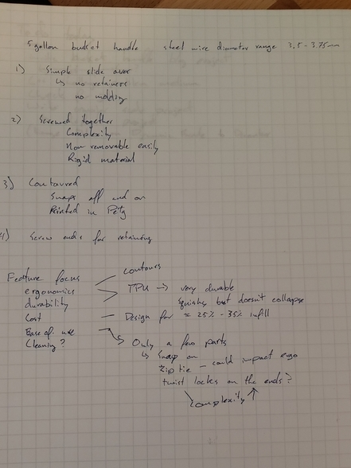
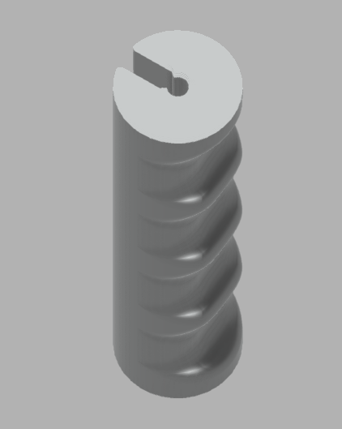
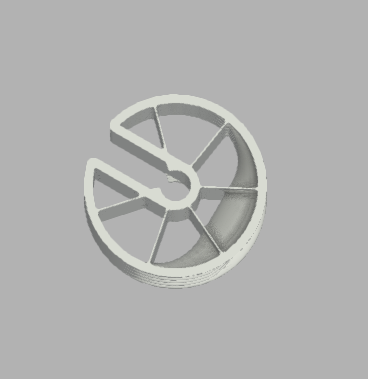
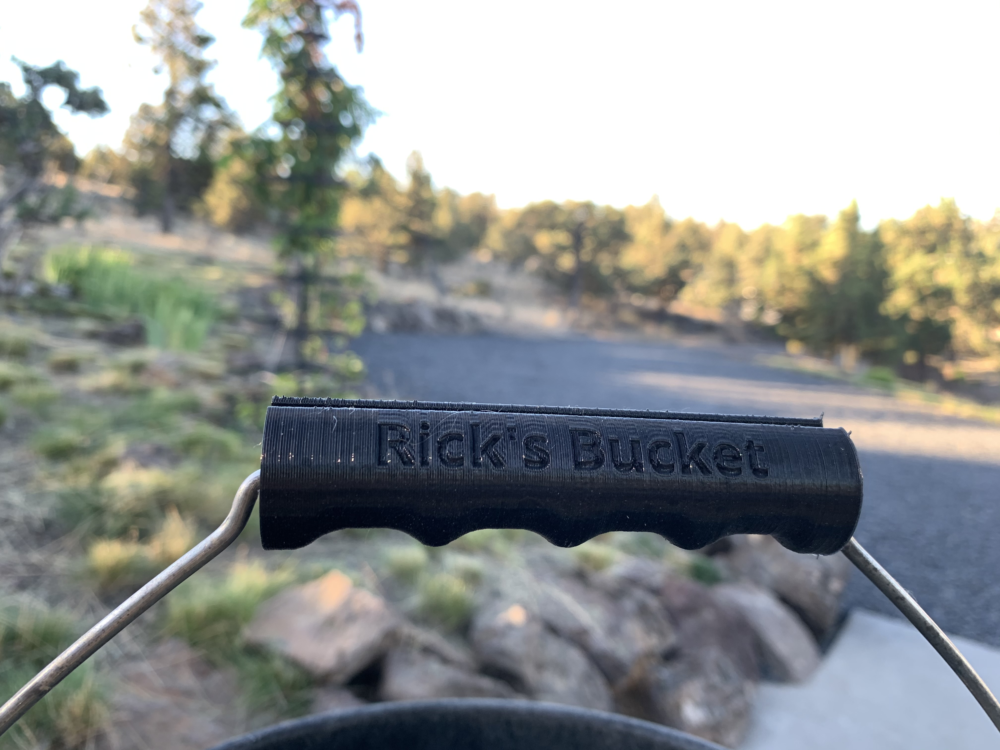

3D Printed Bucket Handle
Market Research
The first step to any engineering product is research. After all, when Newton said "Dwarves standing on the shoulders of giants can see further than the giants" it was true — innovation produces a product faster than invention. By looking at the limited options on the market I was able to evaluate several different design approaches and find my own unique idea. Others seemed too complicated with a screw-together design or requiring the user to slide multiple pieces together. These either increased the final part count beyond what I thought was justified for the extra security, or required more exact tolerances than I thought was necessary.
I also found features highly worth including such as contouring the handle for finger comfort, and found the general dimensions I should target. After this research I focused my design criteria on:
- Ergonomics — if it is uncomfortable there is no reason to use the product over the wire handle
- Durability — if it breaks it is no better than the original handle
- Cost — I had very few funds; I wanted to use materials and manufacturing methods I already had (3D printer + TPU)
- Ease of Maintenance — I didn't want to make something that would eventually get too disgusting to use even with gloves on
The design would be a single piece of TPU printed to snap onto the wire with contours for fingers, printed vertically with open ceiling and floor using rectangular infill for support.

Design Iterations
Revision 1
I started by modelling the end profile, extruding the shape up, then cutting the grips using a perpendicular plane, and finally shelling the entire thing. For the first test I relied on the rectilinear infill pattern generated by Simplify3D — this turned out to be a mistake as the pattern meant the handle was very strong in the axis directions but folded easily under off-axis compression, splitting at layer lines.
For the next trial I increased infill density and line thickness, and printed at higher temperature with lower fan cooling to increase layer adhesion. This resulted in acceptable off-axis deformation resistance but was rock hard under normal load. The higher temperature also left more thin strands in the infill cavities.
These models were valuable for fiddling with snap-fit tolerances. Initially the snap portion ran the entire length of the handle but this made it difficult to snap onto the wire. I next tried splitting the snap into three sections — one on either end and one in the center — with ~0.2 mm gap between the wire's nominal diameter and the inside wall of the snap. This was too tight for the material and led to a snap that wouldn't close correctly. I increased the tolerance to ~0.5 mm gap but made the snap tighter.

Revision 2
The infill pattern still left a lot to be desired, so I switched to designing in a support structure reminiscent of bicycle spokes. The idea: TPU is not very good at compression but is fantastic under tension. I couldn't pretension the spokes at all but figured they should still resist deformation well.

By varying the width of the spokes I could adjust the deformation under load. I printed a variety of options and chose the one that deformed under a full 5-gallon bucket of water — just enough that the grip almost touched the centre structure — spreading the load on the finger for maximum comfort.
Personalisation
With the basic structure done I set about making them fun for my step-dad. Phrases embedded into the sides:
- I wish it was a beer bucket
- Don't kick the bucket
- Shit's heavy!
- Rick's Bucket
Testing and Manufacturing
Testing
Going back to the main design criteria — ergonomics, durability, cost, ease of maintenance — I ran a few tests using superfluous prototypes:
- Dog test — lasted 10–15 minutes before my dog was ripping chunks off. Reassuringly, they no longer ripped solely along layer lines, confirming sufficient layer adhesion.
- Gasoline soak — confirmed TPU's claimed solvent resistance. Color is UV resistant and shouldn't stain per spec; the solvent test passing made the others acceptable to assume.
- Hammer test — hit one with the same wall structure as the final design.
After those tests I considered the handles "good enough" and sent a set to my family for a long-term test session.
Manufacturing
Making the handles wasn't as easy as just slicing and printing. I had accidentally deleted my TPU profile and had to retune. I ended up doing a batch print of 5 handles simultaneously — almost a 9-hour print. The handles sent to my family were prototype quality with significant layer lines and retraction issues between models.

For final design handles I need to either print sequentially or fix the retraction — which I suspect requires replacing the print head. The Volcano currently on the printer oozes far too much for fine detail work. I'll be trying slightly more retraction, less acceleration, and a lower temperature. The acceleration change will have to wait until I find the funds for another upgrade round on the printer.